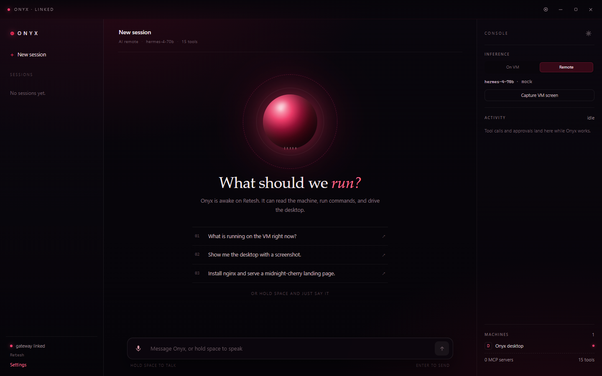
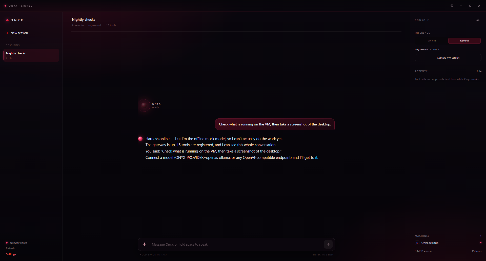
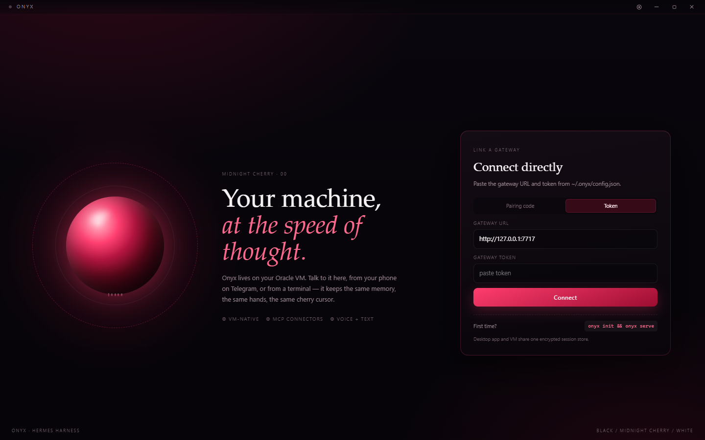
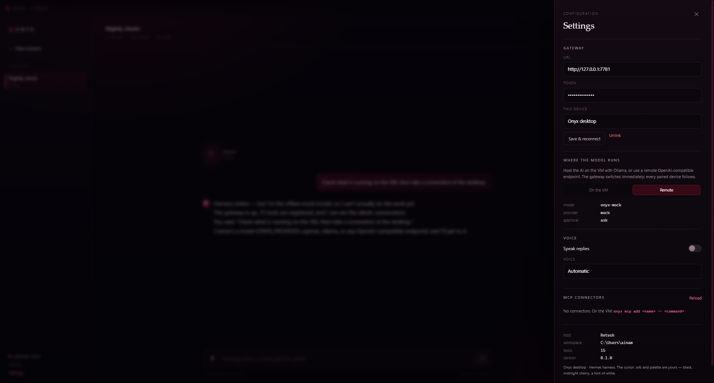

Agent with hands
Hermes loop with streaming turns, tool calls, approvals and audits. Shell, files, system info, desktop control, and anything an MCP server exposes.
A voice-first agent harness that lives on an Oracle Cloud VM. Shell, files, screenshots, mouse and keyboard. Reach it from the desktop app, from Telegram on your phone, or from a terminal. Same memory, same tools, same session.
ONYX · linked
Hermes loop with streaming turns, tool calls, approvals and audits. Shell, files, system info, desktop control, and anything an MCP server exposes.
Telegram text, voice notes, photos, /screen, /status, and approvals in your pocket. Pair with a single-use code.
Electron + React shell with push-to-talk, a remote cursor, mini orb mode, and approval cards. Hold space, speak, done.
Stdio and streamable HTTP. Hot-reloadable, namespaced, dead-server tolerant. onyx mcp add …
OpenAI-compatible endpoints, local Ollama, or an offline mock. Move inference between the VM and a remote host without restarting.
HTTP REST + SSE, WebSocket hub, Telegram bridge, hashed device tokens, single-use pairing codes. One process, one owner.
git clone https://github.com/reteshmani0-droid/Onyx.git && cd Onyxnpm install && npm run buildnode apps/vm/dist/index.js init.env, then node apps/vm/dist/index.js doctornode apps/vm/dist/index.js serve
Pair a phone with onyx pair, or open the desktop app and paste the
gateway URL and token. Full walkthrough:
VM setup.




packages/protocol shared types and wire events packages/core Hermes loop, providers, tools, MCP, approvals, storage packages/server HTTP/SSE, WebSocket hub, Telegram bridge apps/vm CLI and service entry point apps/desktop Electron + React voice-first shell
One gateway, several doors. The VM owns state; every client is a view onto the same sessions, tools and approvals. See architecture docs.
MIT licensed. Clone, build, run. The gateway is loopback by default — put TLS in front of it and treat it like SSH.
Clone the repo